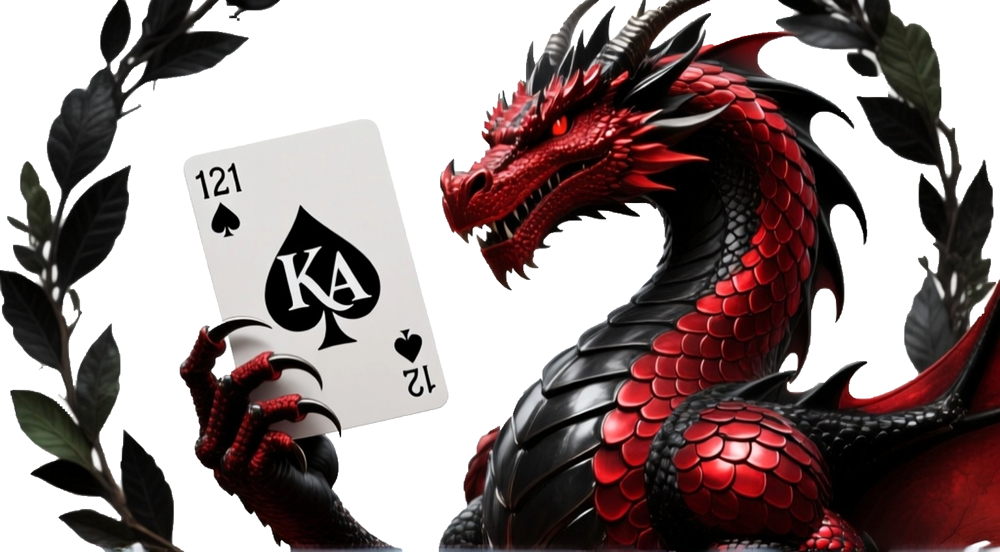
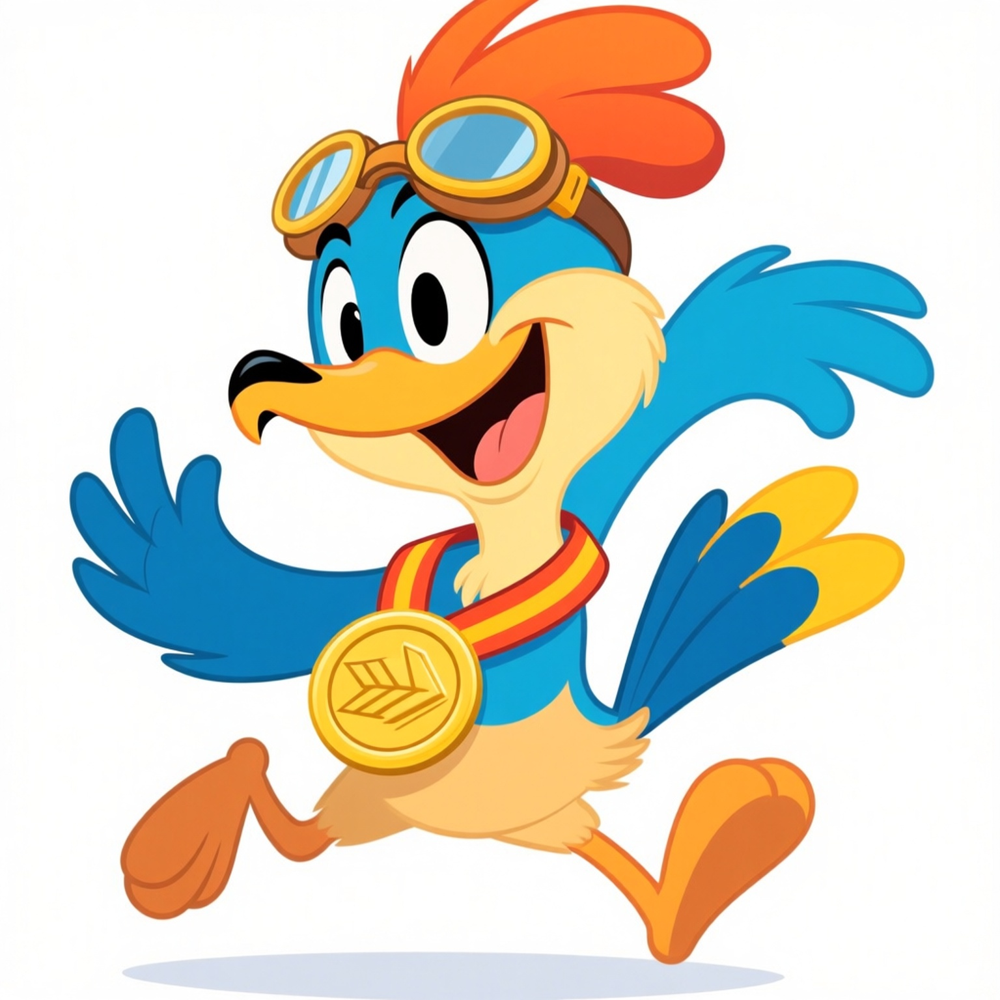

Imagine Art, an AI tool not as commonly known to the public, but a rather strong one with the cost of a few free trials before you have to make purchases. Imagine Art gives the user multiple choices on what to do with the platform it runs. From image generation to animations, Imagine Art is similar to Sora when it comes to usability. Imagine Art however has limits, each generation costs points, and once you run out, you either have to wait 24 hours for more, or you have to pay actual money for more.
When deciding what generators to use for this, I knew I had to use a generator not many have heard of, but who knew this one would be the most advanced?


By far the quickest to generate, but also the goofiest looking one. To my surprise, I was actually given mutiple images to choose from and trying to figure out where these were pulled from was impossible. Not a single image stuck to the same scheme. Each one was a different color, some had hands, some had wings, one was given a background with details to show motion. But I chose this one to show as the positioning seemed like how early AI generators would look. The position is supposed to look like Agil turning to look back and wave, but look at the legs, they look incredibly off. All images generated also looked like a cereal mascot or a school mascot with how cartoony they really got.
Imagine Art may not be the most known, but it was the easiest to work with surprisingly. I didn't have to worry about copyright and I got multiple images for one prompt. The details on Imagine Art's generation is an example of how one might have to do a double-take to see if what they are looking at was done by humans or machines. I also as a neat little touch, wanted to secretly change the logo of the website with an image generated by the AI I was talking about to see if anyone would notice. The logo on the Index and AI and Artists Online pages were done by me in about 20 minutes and all AIs were about the same with times with this generation as well. Things seemed flawless until Imagine Art, as the details on the dragon were too smooth and nothing like the other AIs.